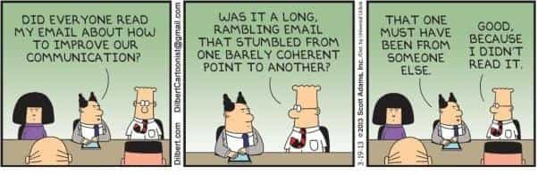

Libertas is a young bard traveling along the endless road to self-improvement and recounting his adventures. You can follow him on Twitter.


As winter is about to come to an end, I hope you guys have all been working hard. Much as we may detest the cold, there’s really no better time to get the bulk of your year’s projects done, because warm weather always beckons us with playful distractions. But this brings us to something of a crossroads. It’s very easy to think about what we want to do and the grand finale of our success, but creating a detailed plan of how to get there is another matter entirely.
This is where the concept of a talent stack comes into play. If you look at some of the most successful men in history, you’ll see that they may not necessarily have been the best at any one particular thing, but they were really good in almost everything they did.
You can apply the same concept to yourself, relative to your ambitions. Scott Adams, who coined terminology to describe the concept, explains that goals are for losers. Winners develop systems instead. Systems work better because they can adapt and succeed in a wide variety of circumstances. This, he explains, gives you better odds of success in the long run. Your original idea might not work out, but you’ll have gotten good at something you can take with you in your next attempt. That something you learned from your failure can become part of your system that will be there for you when success is easier to find.
Each of you will have different ambitions than I do, as well as different natural talents. The following, however, is a general set of skills that I think will be beneficial on every man’s journey. They’ll come in handy to taking every protagonist to his own happy ending.
No matter what you do, there’s going to be some kind of persuasion involved. Fortunately, Return Of Kings already sent you down this road by incentivizing you to get in the game and get good with women. By doing this, you’re already getting confident, used to leading, suggesting, closing, and so on. The game will give you a better interactive and more enjoyable lesson in persuasion than any course you take or book you read.
Yet, because of the central importance of this skill, it’s always best to learn as much as you can about it, because there always seems to be something new to learn. I recently read one of the best books I’ve ever seen on the subject, Unlimited Selling Power.
Unlimited Selling Power is a book that goes into great detail about hypnotic language patterns and conversational techniques that has already greatly improved my own persuasive technique, and I can’t want to try them out when the day gaming season opens up again in a few weeks. Whether you’re writing or speaking, the techniques work. I recommend you read this book as soon as possible.
Yes, it’s true that the most important part of SEO is creating good content that people want to share. But it’s also true that there’s a lot out there that people tend to miss. Even if your content is good, you won’t get much attention unless you put it through the SEO filters. In this, there’s a lot of little tricks you need to know if you’re going to be selling anything or building a brand online.
SEO is a needed skill, but the problem is it’s somewhat hard to get good advice because the field is littered with “experts” that don’t know anything. Be careful and don’t hire these people. You can get good enough on the cheap, so don’t even consider going to some expensive class or hiring some “expert.”
For instance, one common mistake people make is with image files. Instead of uploading a file with a name relating to the title and content, they upload something like “4qMB37E.jpg.” Safe to say, this isn’t conducive in telling search engines what your image is about, so people will miss it. You may as well have never released your content.
You can get good enough at SEO with a simple book. SEO Step by Step is one I read recently like. It tells you a lot of things you probably overlooked. You can get it for less than $10.
A subset of persuasion, its central importance is that, even in the digital age, you’ll likely still be doing most of your communicating and persuasion through the spoken word. The ancients considered rhetoric to be of central importance to a young man’s education, and if they could afford it, families would send their sons to study under the masters of the art, most famously at Rhodes, where Cicero and Caesar learned. This is but one more thing that modern systems of education are severely lacking in.
Again, getting good with women will go a long way in improving your rhetorical ability, as will learning the conversational techniques in Unlimited Selling Power. Podcasting and video making will as well. I’ll be reading Verbal Judo later this year for a specific book on the subject.
Here’s where I also ask you for help. 2017 is a year where I want to improve my rhetorical skill more than any other. Do you have a resource of your own? I’d love to see it.
This is a skill Scott Adams highly suggests adding to your own talent stack. The idea of business writing is to eliminate anything unnecessary and to get straight to the point. Too many people leave their compositions cluttered with unnecessary points and passive voices, which grow tiring to the reader.
Consider the following sentence:
“The item was purchased by the man.”
Compare it to:
“The man purchased the item.”
The second is far easier for the mind to comprehend. You may think you know that, but it’s actually too easy to wind up getting caught in passive voices or long-winded babble, and it won’t look good in anything you write, especially in your work.
Notice also that the word “may” was unnecessary in the last sentence. “You think you know that” does the exact same job.
These little things add up.
One book on the subject I’m planning to read later this year to improve this skill is Writing Without Bullshit. I’ll let you know how it is.

You should know how to make a website look good and how to install the proper plugins and extensions. Sometimes this may require a rudimentary knowledge of HTML. As always, the idea isn’t necessarily to become a pro, but to just know enough. For instance, at one of my web sites, I installed a chat box that greatly increased engagement and interaction with the site, keeping visitors there longer. I needed to know where to put the code for this in the HTML site template. It didn’t take me long to learn, but the key thing is to familiarize yourself with it. A lot of people tend to think this kind of thing is “over their head,” which means you can lend a helping hand – and win you more allies in the process.
These are only a few skills to add to your talent stack and your overall system. Having an eye for fashion, a system to improve your appearance generally, developing an appetite for risk, and developing knacks to sell a particular product are all important, but brevity requires me to stop here. This talent stack is only the beginning. If you have other vital things to add, skills that have improved your own odds, be sure to let us all know.
Read More: Why Women Are The Unfairer Sex